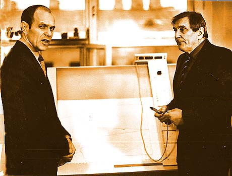
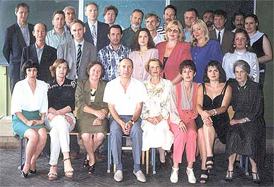
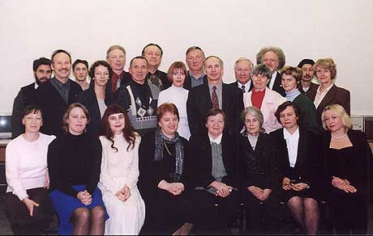
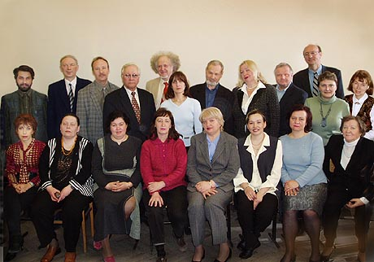

Август 1979 года - создание кафедры Прикладной математики и
Вычислительной техники. Заведующий кафедрой - профессор Виталий Григорьевич Суздаль.
Начало базовой подготовки студентов в области вычислительной техники. Кафедра
размещалась в главном корпусе института (аудитории 521, 522, 530). Преподавательский
состав - 10 сотрудников: 1 профессор, 3 доцента, 3 старших преподавателя, 2
ассистента и лаборант.
Парк ЭВМ на различных кафедрах вуза - ЭЦВМ ПРОМИНЬ, МИР, НАИРИ, которые
использовались для выполнения небольших по объему курсовых работ, обработки
исследовательских наблюдений. Программирование выполнялось в кодах команд или
автокодах. Вычислительный центр был оснащен ЭВМ ОДРА-1010, ОДРА-1024, ЕС-1020 и
ЕС-1022, расчеты выполнялись с применением языков программирования АЛГОЛ и ФОРТРАН.
Начало 80-х годов - кафедра переведена в учебный корпус на проспекте
Майорова (ныне - Вознесенский пр.), аудитории 469, 470, 412, 413. Техническая база
кафедры - малые ЭВМ польского производства ОДРА-1204 и МЭРА-60, которые позволили
создать локальные сети в классах. Позже классы оснащаются отечественными
компьютерами класса ДВК (диалоговые вычислительные комплексы).

Математическое обеспечение включает трансляторы различных языков программирования
(Алгол-60, Фортран, Кобол). Для студентов всех форм обучения обязательным языком
программирования в соответствии с требованиями учебных планов принимается Фортран-4,
дополнительным - язык программирования Бейсик.
Вводится непрерывная математическая подготовка с использованием компьютеров на весь
период обучения студентов.
В научные исследования внедряется автоматизированное рабочее место (АРМ) "Экран-4",
которое использовалось в студенческих научных и дипломных работах при проектировании
предприятий и цехов производства нетканых материалов, при конструировании одежды и
изделий из кожи.
Защищены 3 докторские диссертации и 4 кандидатские диссертации.
Участие в программе "Интенсификация-90" Ленинграда и Ленинградской области совместно
с предприятиями ЛПОО Скороход, комбинатом тонких и технических сукон им. Тельмана,
фабрикой им. В.Слуцкой.
Конец 80-х - начало 90-х годов. Заведующим кафедрой становится
профессор, доктор технических наук Воронов Михаил Владимирович. Классы
переоснащаются персональными компьютерами IBM PC.
В связи с изменением государственных стандартов по компьютерным дисциплинам и
увеличением диапазона читаемых курсов, кафедра переименована в кафедру Прикладной
математики и Информатики.
Конец 90-х годов. Полностью обновлены технические и программные
средства обучения, осуществлен переход на операционную систему MS W indows 95,
приложения MS Office, пакеты прикладных программ Statgraph ics , MathCAD , язык
программирования Visual Basic . Появляется новое периферийное оборудование: сканеры,
лазерные принтеры, CD-ROM'ы.
Для повышения эффективности обучения по дисциплинам цикла "Дизайн" широко
используются личные конференции преподавателей кафедры с помощью сетевых приложений
MS NetMeeting.

С 1994 года кафедра ведет подготовку по специализации "Информатизация швейных и кожевенно-обувных предприятий".
C 1997 года – по специализации "Информационный дизайн".
С 1999 года кафедра размещается в отдельном блоке помещений. Основу парка составили
компьютеры IBM класса Pentium. Компьютеры объединены в сеть под управлением серверов
Windows NT 4.0. Обеспечена возможность дистанционного обучения студентов и
аспирантов университета программными средствами, установленными на серверах кафедры.
Для проведения лекционных занятий установлен мультимедийный проектор с экраном и
компьютер, обеспечивающий возможность захвата изображения и звука с цифровой
видеокамеры.
Подведена оптоволоконная линия связи с главным корпусом (Б. Морская, 18). Оборудован
сетевой узел связи для выхода в I nternet .
В период 1999–2001 годов кафедра участвовала в программе Европейского Союза TACIC в
рамках проекта DELPHI -4. За этот период была освоена методика построения
мультимедийных учебников и разработаны электронные дистанционные учебники по
прикладной статистике, разработке экспертных систем и информационному маркетингу.
2003 год. Заведующим кафедрой становится профессор Суздалов Евгений Георгиевич.

На кафедре в учебном процессе используются шесть современных компьютерных классов. Происходит переход на операционную систему Windows XP.
Основные направления научной деятельности кафедры - математическое моделирование организационных систем, экспертные системы, информационные системы управления, мультимедийные технологии, трехмерное компьютерное моделирование.
На кафедре работают два доктора и восемь кандидатов наук. Ежегодно кафедра выпускает десятки научных трудов: учебных пособий, статей, тезисов докладов и методических указаний. На кафедре проходят обучение три аспиранта.
2004 г. На базе кафедры открыта новая специальность 351400 “Прикладная информатика (в областях экономики и дизайна)”.

2013 г. На кафедре работает 22 преподавателя - 2 доктора наук, 9 кандидатов наук, заслуженный художник РФ, 2 члена Союза дизайнеров РФ, 2 члена Союза архитекторов РФ и 20 человек учебно-вспомогательного состава, входящих в 2 лаборатории.
Оснащенность кафедры: 7 компьютерных классов, в которых установлено 100 персональных компьютера, аудитормя для проведения лекций и практических занятий.
Число студентов, обучающихся по специальности 080801.65 "Прикладная информатика", - 400 (15 групп). Число читаемых по специальности дисциплин - 41.
Число студентов Университета других специальностей, с которыми преподаватели кафедры ведут занятия, - 6150 (342 группы). Число читаемых дисциплин - 79.
Таким образом, общее число читаемых на кафедре дисциплин - 120. Общая учебная нагрузка - 24360 часов.
Настоящщее время.
С 1 сентября 2014 г. кафедра реорганизована с образованием двух новых кафедр: кафедры информационных технологий и кафедры информационных систем и компьютерного дизайна.
Кафедра информационных технологий является выпускающей по направлениям обучения:
09.03.03 Прикладная информатика (бакалавриат), профиль Прикладная информатика в экономике;
09.04.03 Прикладная информатика (магистратура), профиль Прикладная информатика в экономике;
09.06.01 Информатика и вычислительная техника (аспирантура), направленность программы – Системный анализ, управление и обработка информации.
Заведующий кафедрой Пименов Виктор Игоревич.